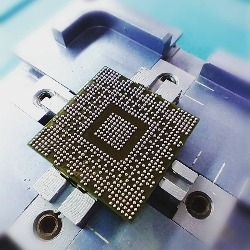
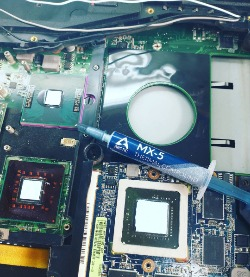
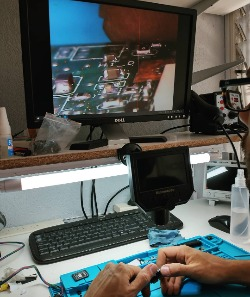

El reballing es una técnica de reparación que consiste en resoldar algún componente, generalmente el chip gráfico o GPU (motivo por el que los componentes que tienden a llegar a necesitar esta técnica son las tarjetas gráficas, placas base y portátiles).

Uno de los motivos por el cual un equipo aveces no logra encender o terminar su secuencia.... Mantener un equipo en óptimas condiciones es extender su vida útil y sin fallas... No dejes pasar el tiempo

Nuestro trabajo se basa en detectar la falla en esos lugares donde no se ve, donde se alojan los problemas! Inspección de restos de sulfato el enemigo de la electrónica.